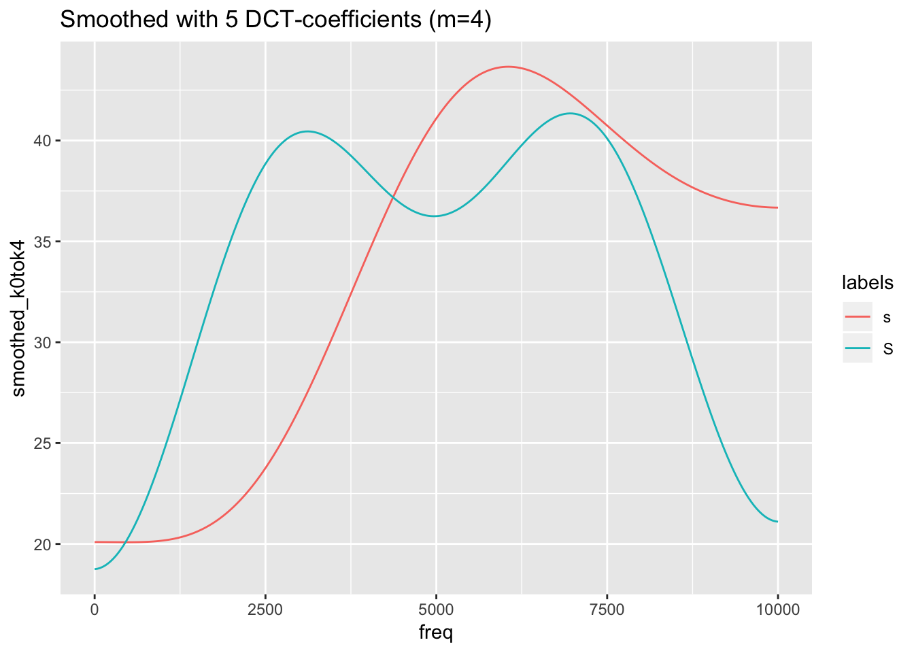
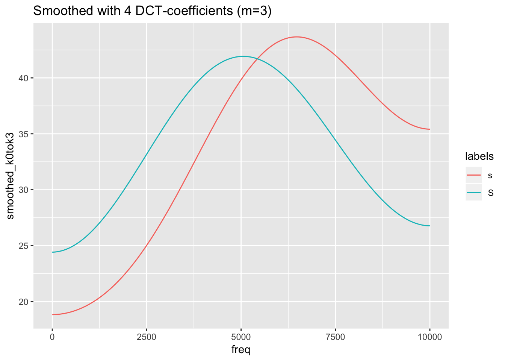
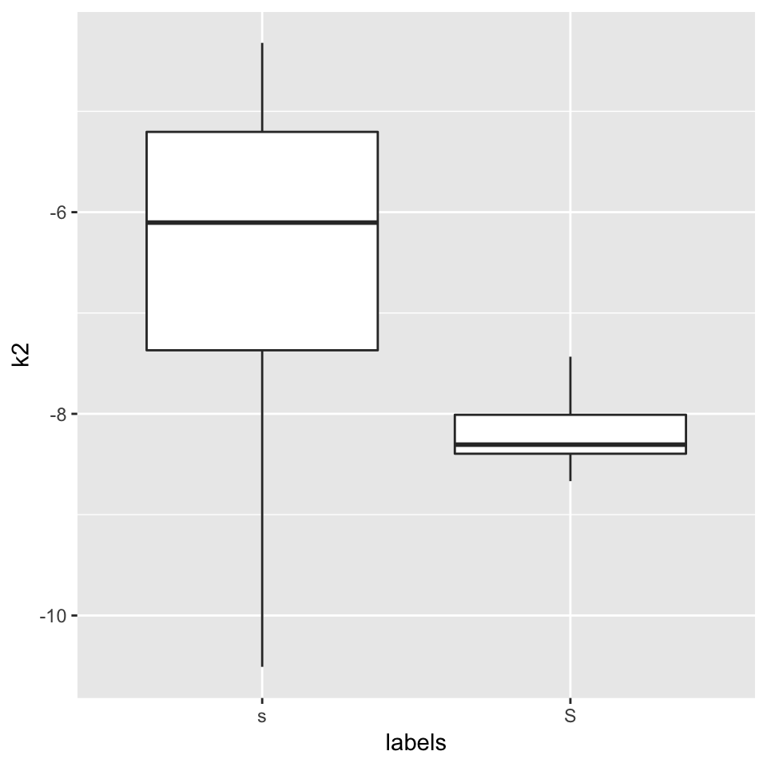

21 How to quantify differences between spectra?
When we look at the figure above, showing average spectra at the temporal midpoints of two fricative categories, it seems that one easy way to distinguish between the two would be to concentrate on the differences in the amplitudes in the 2000 - 3000 Hz range. We could e.g. take the mean in that frequency range across all tokens of the two types in order to check whether it is consistently the case that the alveolar contains much less energy in that frequency range than its postalveolar counterpart:
sS2to3thousandHz = sS.dftlong%>%
filter(freq>=2000 & freq <=3000)%>%
group_by(labels,sl_rowIdx)%>%
summarise(amplitudes_2000_3000Hz = mean(track_value))
ggplot(sS2to3thousandHz)+
aes(x=labels,y=amplitudes_2000_3000Hz,col=labels)+
geom_boxplot()
However, it would be more “elegant” to consider some aspects of the general “form” of a spectral slice.
Each spectral slice is simply a vector of numbers (that has some hidden association to another verctor of the same size, i.e. the frequencies with which the amplitude values are associated with). One way of quantifying a numeric vector by a (usually smaller) set of numbers is the Discrete Cosine Transform.
21.1 Discrete Cosine Transform (DCT)
(See also this document.)
A discrete cosine transform (DCT) expresses a finite sequence of n data points in terms of a sum of cosine functions oscillating at different frequencies.
The amplitudes of the cosine functions, k0, k1, k2, … kn-1, are called DCT coefficients.
- k0: the amplitude of a cosine with a frequency of 0
- k1: the amplitude of a cosine with a frequency of 0.5
- k2: the amplitude of a cosine with a frequency of 1
- …
- kn-1: the amplitude of a cosine with a frequency of 0.5*(n-1)
If you sum up all these DCT coefficients, you will reconstruct exactly the very same signal that was input for the DCT analysis.
Higher DCT coefficients correspond to the details of the “finite sequence of n data points”, whereas lower coefficients represent the more general characteristics. At least the three lowest ones, k0, k1, and k2, correspond (but are not equal) to the following three statistical descriptive features: k0 is linearly related to the sequence’s mean, k1 to the sequence’s slope, and k2 to its curvature. See e.g.:

Because we are dealing with straight lines, k2 is here always 0 (and is therefore not shown in the fourth panel of the figure). However, the next plot shows k2 of four quadratic polynomials:

So, if we want to get rid of too much detail (e.g. in signals frequency perturbations like jitter or error measurements), we can use the lower numbers of DCT to smooth the signal. We can apply DCT to a signal by means of the emuR function dct(...,m=NULL,fit=TRUE), with ... being one of the columns of an emuRtrackdata tibble:
# calculate spectra reconstructed by dct()
sS.dftlong.mean = sS.dftlong.mean %>%
group_by(labels) %>%
mutate(reconstructed = emuR::dct(track_value,fit=T))
#plot the reconstructed spectral slices
ggplot(sS.dftlong.mean) +
aes(x = freq, y = reconstructed,col=labels) +
geom_line()
# this is obviously exactly the same as the original data:
ggplot(sS.dftlong.mean) +
aes(x = freq, y = track_value,col=labels) +
geom_line()
However, if we use the parameter m in order to reduce the complexity of the spectral slices, they will become smoother:
sS.dftlong.mean = sS.dftlong.mean %>%
group_by(labels) %>%
mutate(#you can't use m=0 in order to calculate k0 only
smoothed_k0tok1 = emuR::dct(track_value,m=1,fit=T),
smoothed_k0tok2 = emuR::dct(track_value,m=2,fit=T),
smoothed_k0tok3 = emuR::dct(track_value,m=3,fit=T),
smoothed_k0tok4 = emuR::dct(track_value,m=4,fit=T),
smoothed_k0tok5 = emuR::dct(track_value,m=5,fit=T),
smoothed_k0tok6 = emuR::dct(track_value,m=6,fit=T))
ggplot(sS.dftlong.mean) +
aes(x = freq, y = smoothed_k0tok6,col=labels) +
geom_line() +
ggtitle("Smoothed with 7 DCT-coefficients ()")
ggplot(sS.dftlong.mean) +
aes(x = freq, y = smoothed_k0tok5,col=labels) +
geom_line() +
ggtitle("Smoothed with 6 DCT-coefficients (m=5)")
ggplot(sS.dftlong.mean) +
aes(x = freq, y = smoothed_k0tok4,col=labels) +
geom_line() +
ggtitle("Smoothed with 5 DCT-coefficients (m=4)")
ggplot(sS.dftlong.mean) +
aes(x = freq, y = smoothed_k0tok3,col=labels) +
geom_line() +
ggtitle("Smoothed with 4 DCT-coefficients (m=3)")
ggplot(sS.dftlong.mean) +
aes(x = freq, y = smoothed_k0tok2,col=labels) +
geom_line() +
ggtitle("Smoothed with 3 DCT-coefficients (m=2)")
ggplot(sS.dftlong.mean) +
aes(x = freq, y = smoothed_k0tok1,col=labels) +
geom_line() +
ggtitle("Smoothed with 2 DCT-coefficients (m=1)")
Remember, that the last figure shows only two (inverted) cosine functions of a certain amplitude with frequency 0.5. This is obviously not the best representation of the spectra of /s/ and /ʃ/. We need to find a compromise between too much and too less information. In this specific case, m = 4 (= 5 DCT-coefficients) seems to be the best compromise.
We can, of course, apply the dct-function also to the non-averaged data:
# plot the spectral slices
ggplot(sS.dftlong) +
aes(x = freq, y = track_value,col=labels) +
geom_line() +
facet_wrap( ~ sl_rowIdx + labels)
sS.dftlong = sS.dftlong %>%
group_by(sl_rowIdx) %>%
mutate(smoothed = emuR::dct(track_value,m=4,fit=T))
# plot the smoothed slices
ggplot(sS.dftlong) +
aes(x = freq, y = smoothed,col=labels) +
geom_line() +
facet_wrap( ~ sl_rowIdx + labels)
# or plot original and smoothed slices
ggplot(sS.dftlong) +
aes(x = freq, y = track_value,col=labels) +
geom_line() +
geom_line(aes(y = smoothed),lwd = 1.2) +
facet_wrap( ~ sl_rowIdx + labels)
21.2 DCT coefficients
Until now, we have applied dct() always with the parameter fit set to TRUE, i.e. we have always analysed and resynthesized the data in one step. We haven’t seen so far the outcome of the analysis, i.e. the coefficients of the DCT. They might, as the example above has shown, be capable of a simple quantification of certain features of the signal/spectral slice (i.e. the mean, the slope, and the curvature of the signal).
Let’s have a look how useful these coefficients may be. In order to calculate only a couple of coefficients, we will have to learn a new method of data-wrangling in dplyr, as we cannot use summarise() (as this verb transformes many values into one value) or mutate() (which transformes N values into N other values). The verb to use is called do(). It can handle any function (not only a few, as it is the case with summarise()). There a two specialties of do():
input has to be a special dataframe, so we have to use
data_frame()you cannot call a column only by it’s name
ColumnName, but have to use.$ColumnName, where.means “the current dataframe”.
However, this will not be enough: we then have a tibble with m+1 observations (dct-coefficients in one column); our goal, however, is to have one column per
DCT coefficient. In order to do so, we will have to convert the long format to the wide format by means of the spread() function. In order to being able to use this function, we have to introduce another column containing the indexical information which value in column DCT is which DCT-coefficient. Quite complicated, uh?
E.g.
# calculate 6 dct coefficients for each token of s or S
sS.dctCoefficients =
sS.dftlong %>%
group_by(labels,sl_rowIdx) %>%
do(data_frame(DCT = emuR::dct(.$track_value,m=5,fit=F))) %>%
mutate(DCTCOEF = paste0("k",0:(table(sl_rowIdx)-1))) %>%
tidyr::spread(DCTCOEF, DCT)
sS.dctCoefficients## # A tibble: 21 x 8
## # Groups: labels, sl_rowIdx [21]
## labels sl_rowIdx k0 k1 k2 k3 k4 k5
## <chr> <int> <dbl> <dbl> <dbl> <dbl> <dbl> <dbl>
## 1 s 1 48.9 -4.21 -7.41 0.804 1.04 2.58
## 2 s 3 49.4 -11.7 -7.73 2.43 2.31 4.28
## 3 s 4 52.1 -10.3 -5.03 2.54 1.99 2.67
## 4 s 5 46.7 -9.69 -5.28 3.76 1.16 0.648
## 5 s 8 49.7 -10.0 -5.26 2.43 0.162 1.67
## 6 s 9 44.0 -12.2 -5.15 0.494 0.611 1.35
## 7 s 10 48.6 -13.3 -4.32 2.23 1.98 0.738
## 8 s 11 42.4 -9.84 -5.85 -0.190 -0.131 5.35
## 9 s 13 46.4 -9.95 -7.75 -0.655 0.909 4.43
## 10 s 15 48.0 -11.1 -7.09 0.728 0.608 2.54
## # … with 11 more rowsAfter this quite complicated procedure, we can finally have a look at the importance of the first three coefficients as far as the power to divide categories is concerned. Let do it in reverse order:
#plot k2 (the curvature):
ggplot(sS.dctCoefficients) +
aes(x = labels, y = k2) +
geom_boxplot()
Okay, the curvature seems to be different, but are we sure what this means? A bit more intuitive may be k1, the slope:
#plot k1 (the slope):
ggplot(sS.dctCoefficients) +
aes(x = labels, y = k1) +
geom_boxplot()
Recall that k1 is inversely correlated with the spectral slopes, so /s/ has a steeper positive slope than /ʃ/ (/ʃ/’s slope is close to zero anyway). This simply means that in the range of 0 to 10000 Hz, /s/ has more energy in the high frequency range than in the low frequency range, whereas the energy is more evenly distributed in that frequency range in /ʃ/.
What about k0?
#plot k0 (the slope):
ggplot(sS.dctCoefficients) +
aes(x = labels, y = k0) +
geom_boxplot()
k0 simply corresponds to the mean of the enery in the whole frequency range. This only allows us to find out which of the categories is generally “louder”. As we can see, the mean of the energy is of no use if we want to devide between these two fricatives; it would be much more conveniant to have a function that is able to find the mean of the distribution along the frequency axis (and not along the amplitude axis). There is such a function, which is called spectral moments and which we will discuss next week.
The only thing we could do is to use dct-k0 only in a certain frequency range (e.g. 2000 to 3000 Hz). However, this is equivalent to taking the mean of the energy in that frequency range, as we already had done above:
#repetition: take the mean of the energy in a certain range:
sS2to3thousandHz = sS.dftlong%>%
filter(freq>=2000 & freq <=3000)%>%
group_by(labels,sl_rowIdx)%>%
summarise(amplitudes_2000_3000Hz = mean(track_value))
a = ggplot(sS2to3thousandHz)+
aes(x=labels,y=amplitudes_2000_3000Hz,col=labels)+
geom_boxplot()
# or calculate k0 in the same frequency range:
sS.dctCoefficients2to3thousandHz =
sS.dftlong %>%
filter(freq>=2000 & freq <=3000)%>%
group_by(labels,sl_rowIdx) %>%
do(data_frame(DCT = emuR::dct(.$track_value,m=5,fit=F))) %>%
mutate(DCTCOEF = paste0("k",0:(table(sl_rowIdx)-1))) %>%
tidyr::spread(DCTCOEF, DCT)
b = ggplot(sS.dctCoefficients2to3thousandHz)+
aes(x=labels,y=k0,col=labels)+
geom_boxplot()
grid.arrange(a,b,ncol=2)
21.3 P.S.: Use DCT in order to smooth formant trajectories
Another use-case for dct-smoothing are bumpy formant tracks. Consider e.g. this case:
ae = load_emuDB(path2ae, verbose = F)
i.sl = query(ae, "[Phonetic==i:]")
i.dft = get_trackdata(ae, i.sl, "fm", resultType = "tibble")
i.dft = i.dft%>%
group_by(sl_rowIdx)%>%
mutate(F2_smoothed = emuR::dct(T2,m=2,fit=T))
ggplot(i.dft)+
aes(x=times_norm,y=T2,group=sl_rowIdx)+
geom_line()+
geom_line(aes(y=F2_smoothed,col="smoothed"))+
ggtitle("Orig. (black) vs. smoothed (red) F2-tracks in /i:/")